Green Food

A White Paper for Cape Cod
white paper : an article that addresses issues and helps people make decisions
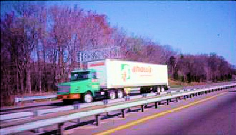One of the advantages of living on Cape Cod is that we can very clearly see the source of our food supply. Most of our food is imported over the bridge in trucks. Most of that food in our ‘Standard American Diet’ comes from somewhere else, usually far away. French fries from potatoes in Idaho, beef from the Mid-west, apples from Chile, olive oil from Italy, coffee from Brazil, corn syrup from Canada , milk from Vermont, etc. One trend that affects imported commercial food is the rising cost of energy used to produce and deliver it. Each food item in a truck coming over the bridge has required large amounts of fossil fuel to grow, process, preserve and package it, has travelled an average of 1500 miles by plane and truck, and has spent days-to-weeks in trucks and warehouses. As fossil fuels gradually become more expensive, food that depends on that energy will also become more expensive. A second trend is world population that is growing rapidly and increasing the demand for the food that’s available. Third, many of the resources necessary for food production such as land, water, fertilizer and labor are under increased demand for other purposes and other populations. Complete reliance on imported food is a vulnerability to Cape Cod’s long-term regional food security.
As a response to concerns about future costs, reliability of supply and medical safety of food, it is instructive to examine the advantages and feasibility of producing more of Cape Cod’s food regionally, on Cape Cod. Food produced locally would provide maximum freshness, maximum flavor, maximum nutrition, maximum food safety, and maximum security of supply. Food produced regionally would provide a degree of insurance against the volatility of international economics and the disruption of food supply in turbulent times.
Growing Food to Eat at Home
“To produce food right where it will be consumed, with little or no transport from field to table is the ultimate efficiency”
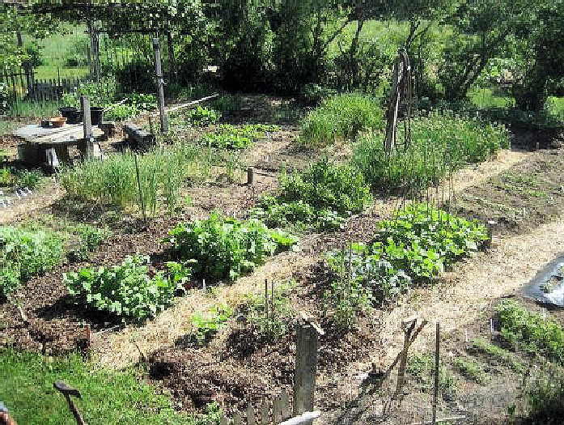
In a home food garden, vegetables are often cooked and eaten within minutes of being
picked. Fresh vegetables have the best possible nutrition and flavor. Food from a home garden is typically transported only a few hundred feet from garden to kitchen. The process involves no packaging, no preservatives, and no shipping.
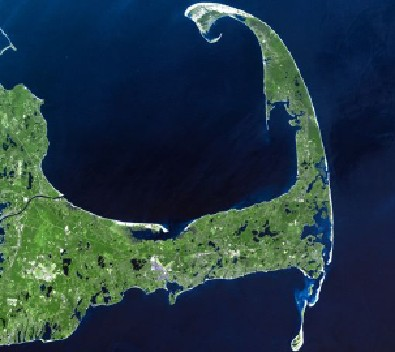
How Much Land Would It Take To Grow All the Food For One Person on Cape Cod?
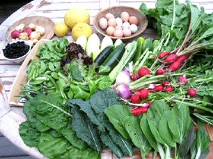Growing vegetables only
Agricultural research on Cape Cod has shown that the amount of cultivated land required to produce a year’s supply of diverse and nutritious vegetables for one person is an area of about 1/100 acre. That is about 450 square feet, equal to arectangular garden 15 feet x 30 feet. That garden area is enough only if it is intensively and skillfully cultivated throughout the year.
Growing all food
The good news is that many Cape Cod homeowners already have this much land on their property, currently growing grass, not vegetables. But people cannot live by eating vegetables only; people need more calories (energy) than are in all the vegetables eaten in a year. The vegetables themselves contain less than 1% of the calories needed in a year. The calories in most people’s diets are in the starches, sugar, vegetable oils, animal fats, and meat that are eaten in addition to their vegetables. Home gardeners who attempt to grow all their food discover that their biggest challenge is to grow enough crops to provide calories.
If calories are obtained by growing only potatoes and grains (wheat, corn, rice, millet…) in addition to vegetables, a minimum of about 1/4 acre of cultivated land per person is required. If chickens or small livestock are grown in addition, an estimated 3/10 acre per person would be required.
How Much Land Would It Take To Grow All the Food For All the People on Cape Cod?
Cape Cod has roughly 226,000 year-round residents (2008) living on our 396 square miles (253,440 acres) of land (excluding ponds). That works out to 1.12 acres of land per person, enough land (if intensively cultivated) to produce a modest, diverse diet. The bad news is that much of the land area that would be needed for agriculture is currently occupied by roads, buildings, lawns, ornamental trees & shrubs and wildlife habitat. Also, Cape’s population triples in the summer with guests and tourists who also need food to eat.
One food strategy for Cape Cod, assuming that agricultural land is very limited, is to produce high-value, high-nutrition fresh vegetables on its available land, and to import the needed high-calorie food products (grains, potatoes, meat, nuts, oil and butter).
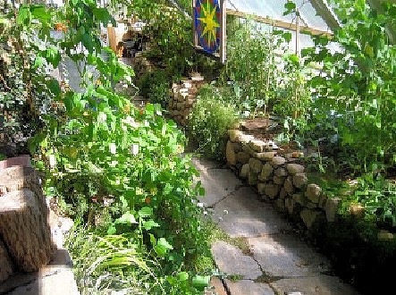To grow all the vegetables for Cape Cod’s 226,000 year-round residents, 2,260 acres of intensive gardens would be required (at 1/100 acre per person). Research has also shown that one highly-skilled, highly-motivated gardener can grow all the vegetables for a year for 10-12 other people. Therefore, 22,600 highly-skilled, highly-motivated gardeners, each cultivating 1/10 acre, could produce all the vegetables needed. Harvesting, distribution and storage would require more, additional, labor and resources.
Cape Cod is also blessed with a sunny winter climate that allows fresh vegetables to be grown through the winter in solar-heated greenhouses. It takes approximately 20 square feet of greenhouse growing area to grow 1 serving of fresh greens per day during the 6 winter months.
The Economics of Home Food Production
When food is grown and eaten at home, the home gardener is essentially converting time and labor directly into food, outside of the money economy. Neither the labor nor the food are assigned a monetary value or counted as economic activity (ie. exchange of money). Economists would see home food production as a cause of decline in the GNP economy, resulting from less corporate employment and less sale of commercial food by grocery stores and restaurants. No one keeps track of the benefits of improved nutrition and health of the gardener.
Growing Food to Sell – The activity of growing food to sell is much different thangrowing food to eat at home. Distribution and marketing requires different, additional labor and skills. Growing food as a business involves hourly wages for labor, pricing food in dollars per pound, government administration, and the inefficiency of food not sold. It is hard to sell a twisted, knobby-looking carrot that is otherwise perfectly fine to eat at home. Traditionally, farm stands, farmers markets, grocery stores and restaurants are the places where willing sellers of food meet willing buyers of food and agree on its money value.
Post-Eaten Food – You Eat It, You Own It
“What part of the ‘Conservation of Matter’ don’t you understand?”
The best example of proven, sustainable agriculture in a temperate climate for a dense population over a long period of time is the traditional pre-industrial agriculture of Asia, developed and refined over 40 centuries. One important feature of that agriculture is that all the mineral nutrients that were in the eaten food were systematically recycled and returned to the agricultural process as fertilizer. The nutrients in the original food would be used again to grow a similar amount of food the next year. The supply of nutrients in the eaten food closely matches the amount of fertilizer nutrients needed for the next year’s crops. They employed fanatical recycling of all waste nutrientsback to agriculture, including all human waste from houses and cities.
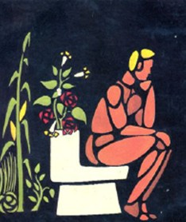The average American eats about a ton (2,053 pounds) of food a year. Interestingly, a person who eats a ton of food a year doesn’t gain a ton of weight. Much of the ton is the water in the food, and some of the food is calories (starch, sugar, and fat) that are burned off by the physical activities of the eater. But virtually all the mineral nutrients in the food still exists after it is eaten – they become (to put it delicately) “post-eaten food” material. Food nutrients-in = food-nutrients-out.
The nutrients in the food coming over the bridge do not just disappear after being eaten, they accumulate, year after year, decade after decade. One of the fundamental ecological challenges of our region (and our civilization) is to develop safe ways to recycle the nutrients from post-eaten food back into productive agricultural processes.
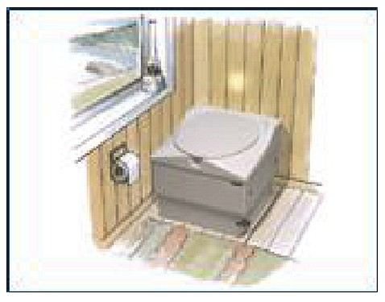Let us imagine the ideal way to recycle nutrients from post-eaten food on Cape Cod safely back into productive agricultural processes. A completely overlooked but ideal way to manage the nutrients is the use of packaging toilets. These are conventional-looking toilets that direct the post-eaten food into an absorbent, deodorized, biodegradable package in the toilet that is sealed after each use and is stored in the base of the toilet. A maintenance contract with a commercial company would be established to periodically collect the packages, sterilize them with heat, compost them at an off- site location, and recycle the nutrients back to farmers as fertilizer, either on or off Cape. In the ideal scenario, polite technicians in green uniforms and unmarked white panel trucks (motto: “Like it never even happened”) periodically take the packages away and install more new packets.
Wide-scale adoption of packaging toilets would offer some interesting advantages :
They use no water – no water goes in, no water comes out – no plumbing at all. No septic tank water leaches into the ground, and no waste water enters sewer lines. Currently we put post-eaten food into millions of gallons of pure water and then wonder how to deal with millions of gallons of polluted water. It is an ecological error to put it into water in the first place. “Inadequately treated waste water” is really a glaring symptom of “inadequately-managed nutrients”. The simplest and most direct way to remove 100% of nitrogen from waste water is to not put nitrogen into water in the first place. An analysis should be done of the cost per pound of nitrogen avoided being put into water, compared to the cost per pound of nitrogen removed from waste water.
- houses serviced with packaging toilets would not need to hook up to a sewer system, avoiding the cost and disruption of connecting a house to a sewer.
- each house would use less town water or well water, freeing up that water for other purposes (such as agriculture)
- their use could separate food nutrients (which would be recycled safely to agriculture) from the many synthetic chemicals and medicines that are now put down the sink and inextricably mixed with food nutrients.
- financially, the high projected cost for sewer hook-ups would pay for decades of a maintenance contract with a licensed nutrient-recycling company.
- they do not require the architectural remodeling required when installing a composting toilet.
-the packaging toilet is one of the few alternatives to flush toilets that is likely to be acceptable to middle-American cultural sensibilities. It is rumored to be the only type of non-flush toilet that finicky urban flush-trained people will use. It provides the same reassuring features of control, sanitation and out-of-sight disappearance as a flush toilet.
- like a household-appliance, they can be rolled around the house and used in any room. They could be leased from a commercial service, or rented as needed for summer guests. A few spares could be stored in the garage. Advanced models and styles could be made to match architectural styles and color schemes.
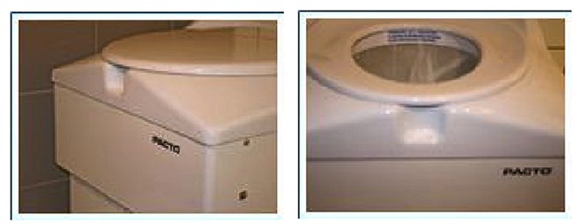
This is new technological territory. Packaging toilets (and compost toilets) today are like the early model-T’s of the automobile era. What are needed are advanced, innovative versions, such as electronic features that would count the number of uses of a toilet and automatically phone the maintenance company for service as needed.
Wide-scale use of them would require a new eco-industry, with new green professionals, such as “ post-eaten-food packaging technicians” and licensed commercial sterilization/composting services.
Agricultural Nutrients From the Kitchen Food Wastes
Food wastes from kitchens are currently either put in a trash bag and sent off to be incinerated using heat from burning waste plastic, or slurried down a garbage disposal to become dissolved in septic tank or sewer water.
A better agricultural solution is to feed the uneaten, wasted kitchen food to chickens, where within a day the nutrients are converted into a clean, highly nutritious egg, biologically packaged in an organic eggshell. More people on earth keep chickens than any other domestic food-producing animal. This strategy would also divert nutrients from garbage disposals that now go into septic tanks, sewers, and ultimately water bodies – ponds, streams and salt marshes.
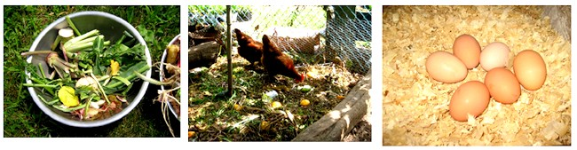
Permaculture – Ecological Planning With ‘the Long Eye’
The most sophisticated (and most idealistic) sustainable food strategy for Cape Cod is permaculture, a practical blend of agriculture, ecological design, and human culture. The strategy of permaculture is to assemble a wide range of useful crops and animals from all parts of the world, and create a landscape that looks and acts like a natural ecosystem, but produces outputs of food, clean water, and environmental life support for humans and wildlife .
“This the century that we’re going to have to learn to live without oil.”
Businesses and towns plan 5 to 10 years into the future. Permaculture plans for centuries. On that time-scale, it is assumed that cheap oil will run out and the current life-support systems that now support human societies will eventually have to be re-designed to run primarily on sunlight and other forms of renewable energy. Permaculture landscapes typically rely on perennial crops and tree crops which do not require annual ploughing and planting. In a permaculture scenario, recycled nutrients would be used as fertilizer for agriculture and tree crops. In an ideal, mature, well-designed permaculture landscape of the future, we’ll all be enjoying smoked trout, roast duck, fresh peaches in maple syrup, toasted walnuts in honey, and organic wine.
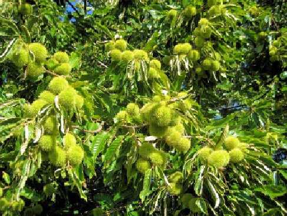 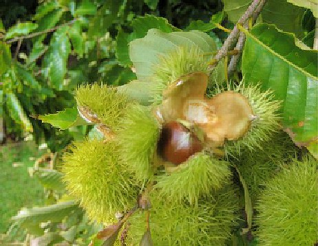
Where To From Here ?
Long-term planning is part of the price we must pay to achieve the kind of world we want to live in.
Given today’s trends of rising energy costs, concerns for food safety and desire for healthier diets, it is timely to shift the focus of food issues to the possibilities and advantages of local small-scale food production. At best, a cultural transition from near-total dependence on petroleum-based agriculture to regional self-reliance on a solar-based agriculture will probably take at least a generation to achieve. It is wiser to become enthusiastic, early adopters of local food production and self-reliance now than esperate, late adaptors to commercial food shortages in the future. There will inevitably be a need for the creation of new businesses, new occupations, new skills and improved ecological education. The needed ecological change is technically achievable. The personal and political change required to facilitate the transition is likely to be slower and less certain, but will be just as necessary to achieve the kind of world we want to live in.
Earle Barnhart, The Green Center,Hatchville, MA
The Green Center, Inc., a non-profit, carries on the original purposes of the New Alchemy Institute (1971-1991), including “ … to provide educational information and instruction on methods to reduce environmental contamination and to restore natural waters and landscapes.”
Earle Barnhart and his wife Hilde Maingay have been doing their ecological homework on Cape Cod since 1972, growing food at home year-round, and testing a wide range of agricultural strategies suited to Cape Cod conditions. They are early adopters of energy-efficient food and housing, and work in environmental education and design.
REFERENCES
Farmers of Forty Centuries F.H.King Rodale Press, Inc. 1911
Peter Bane. “Expanding the Niche of Local Foods” :
Permaculture Activist February 2010 Issue #75
New Alchemy Institute – (see Google : “New Alchemy Institute” )
Pogo. 1970. “We have met the enemy, and he is us.”